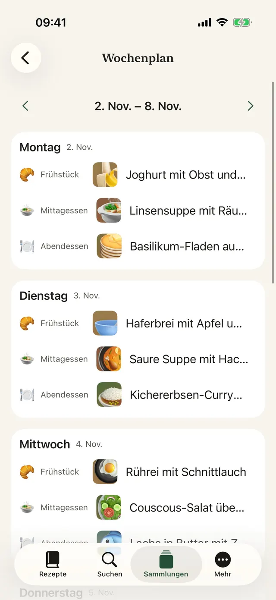
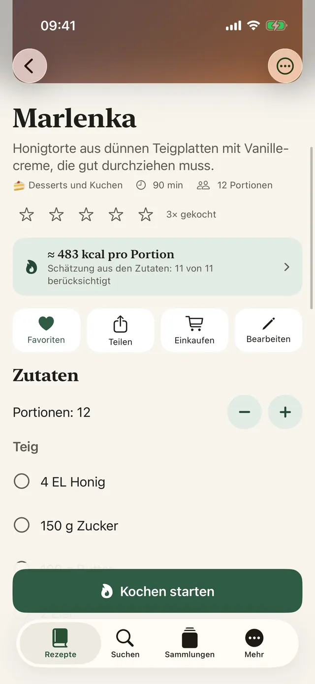
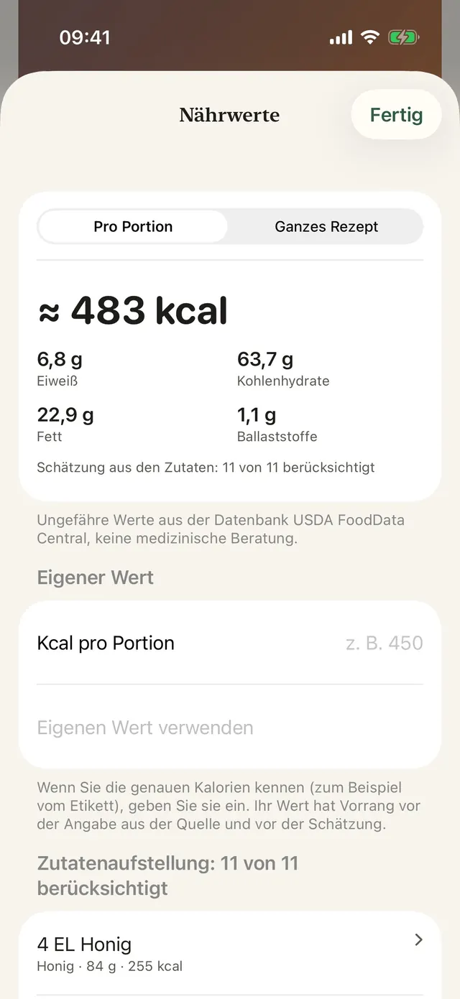
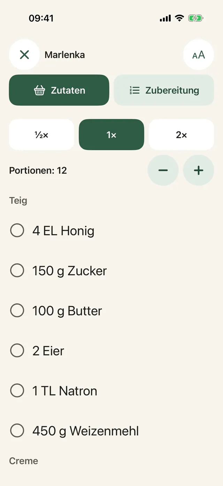
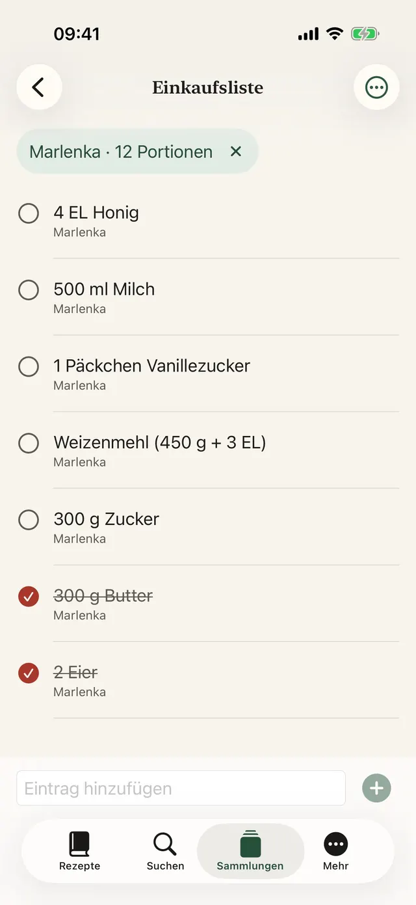
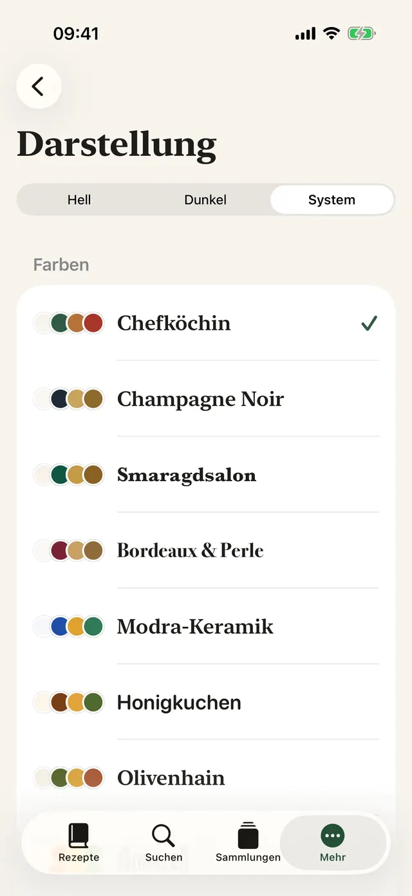
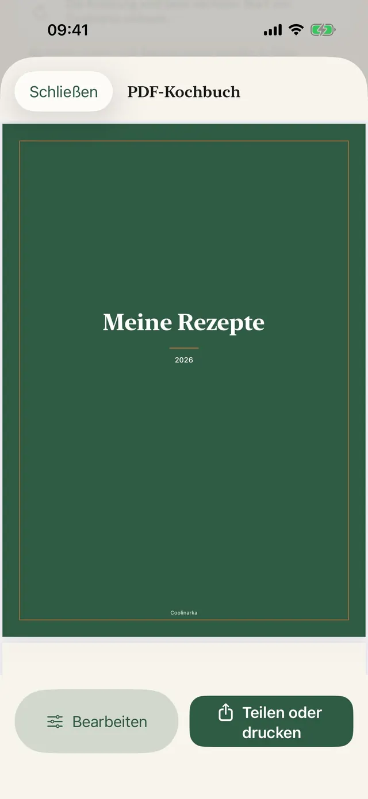
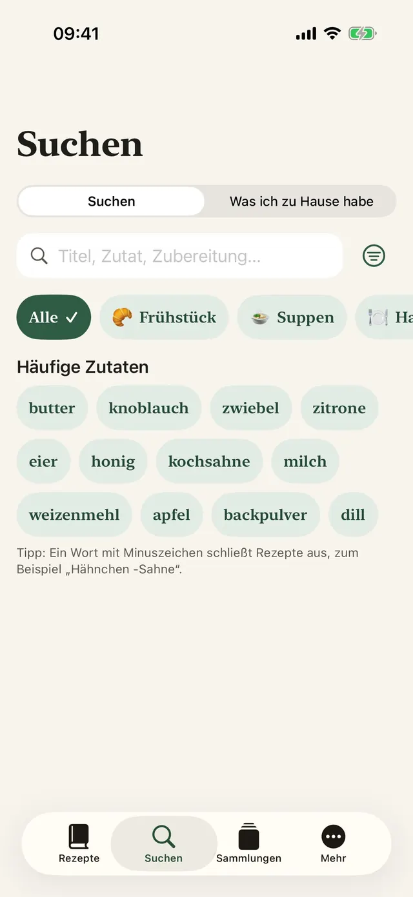
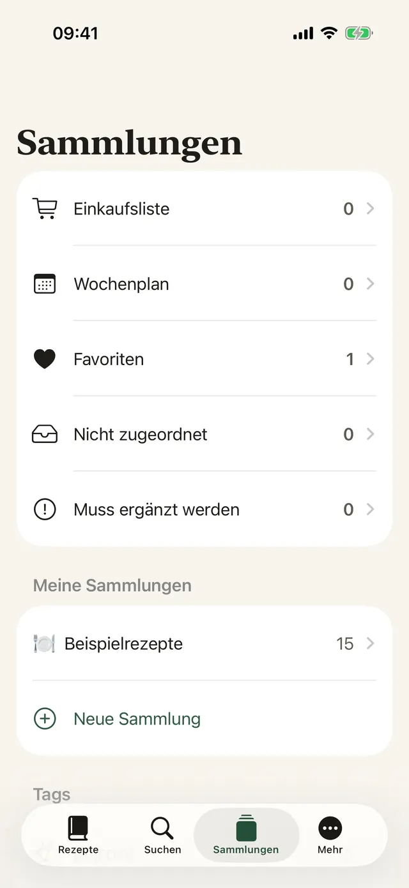

Mit einem Tippen gespeichert
Tippe in Instagram, Facebook oder Safari auf Teilen und wähle Coolinarka.
Speichere ein Rezept von Instagram, Facebook, aus dem Web oder aus einem Video. Coolinarka macht daraus übersichtliche Zutaten und Schritte und führt dich beim Kochen Schritt für Schritt hindurch.
Für iPhone und iPad, kostenlos. Die Android-Version kommt bald zu Google Play.

So sieht ein Rezept in einem Social-Media-Beitrag aus. Einmal tippen, und alles ist ordentlich, samt Portionen, die du umrechnen kannst.
😍😍 Penne mit Brokkoli in Sahnesauce!!! 400 g Penne, 1 Brokkoli, 250 ml Kochsahne, 2 Zehen Knoblauch, 50 g Parmesan, Salz und Pfeffer ... Die Penne nach Packungsanleitung kochen, in den letzten 4 Minuten die Brokkoliröschen dazugeben. In Öl den Knoblauch kurz anbraten, die Sahne zugießen und erwärmen. Die abgetropften Nudeln mit dem Brokkoli und der Sauce vermengen und mit Parmesan bestreuen. 🔥🔥 #penne #food
Einfache Nudeln, die auch Kinder gern essen.
Ein Beispielrezept aus der App. Echte Beiträge sind oft noch chaotischer, und Coolinarka kommt auch damit zurecht, sogar aus einem Screenshot oder Video.
Große Schrift, ein Schritt auf dem Bildschirm, und das Display bleibt an. Den Timer startest du mit einem Tippen, auch mit mehligen Händen.
In dieser Vorschau läuft der Timer schneller.
Die Penne nach Packungsanleitung kochen, in den letzten 4 Minuten die Brokkoliröschen dazugeben.
Zutaten aus mehreren Rezepten werden zusammengerechnet. Wechsle das Land und schau zu, wie sich das Suchwort in die Sprache des Geschäfts übersetzt, auch wenn das Rezept in einer anderen Sprache ist.
In den Warenkorb legst du den Artikel im Geschäft selbst. Die App hat keinen Zugriff auf dein Konto im Geschäft. Die Verfügbarkeit hängt von deiner Adresse ab.
Eine Wienerin in Neapel, ein Berliner in London. Im fremden Geschäft genügt ein kleiner Irrtum, und im Korb liegt etwas ganz anderes. Coolinarka sucht in der Sprache des Geschäfts, damit dir das nicht passiert. Weißt du, was du nach Hause tragen würdest?
Neun Designs mit eigenem Icon, Dunkelmodus und größere Schrift. Such dir eins aus, und die ganze Seite ändert sich, genau wie die App.
Echte Bildschirme, in der Sprache, in der du diese Seite liest.









Tippe in Instagram, Facebook oder Safari auf Teilen und wähle Coolinarka.
Aus einem Video oder einer Bildschirmaufnahme wird ein Rezept, die Sprache wird direkt auf dem Telefon transkribiert.
Plane die ganze Woche, fülle leere Felder mit deinen Favoriten und schick alles auf die Einkaufsliste.
Gerichtstypen, Tags, Favoriten und eigene Sammlungen.
Nach Name, Zutaten oder Zubereitung, auch ohne Umlaute und Akzente.
Das Widget „Was heute kochen“ auf dem Home-Bildschirm und dem Sperrbildschirm, dazu Siri: „Was soll ich kochen in Coolinarka“.
Wer es bekommt, öffnet es in Coolinarka samt Foto. Deine Bewertungen und Notizen sind nicht dabei.
Zuschneiden, Drehen und Filter.
Rezepte werden über iCloud zwischen Geräten mit demselben Apple-Account synchronisiert.
Sichere deine Sammlung oder nimm sie in eine andere App mit.
Einschließlich der Beispielrezepte und der Kalorienschätzung.
Die App kommt ohne Konto, Werbung und Tracking aus. Rezepte bleiben auf deinem Gerät und in deiner privaten iCloud, der Entwickler hat keinen Zugriff darauf.
Rezepte, Import, Export, Sicherungen, iCloud und der Kochmodus kosten nichts. Plus ist ein einmaliger Kauf ohne Abo und lässt sich mit der Familie teilen.
Die Werte sind Richtwerte und keine medizinische Beratung. Die Berechnung läuft auf dem Gerät.
Lade Coolinarka und speichere noch heute dein erstes Rezept.
Für iPhone und iPad, kostenlos. Die Android-Version kommt bald zu Google Play.